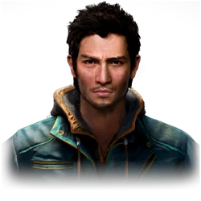

Ficha Técnica
- Estado: protagonista
- Afiliación: Senda Dorada
- Origen: USA
- Actor: Janina Gavankar
Ajay Ghale
"Hacer lo necesario por el futuro de kyrat."
Biografía
Ajay es el hijo de Mohan Ghale, el fundador de la rebelión conocida como La Senda Dorada, e Ishwari Ghale, una mujer venerada en Kyrat. Aunque creció en los Estados Unidos (específicamente en Chicago) alejado del conflicto de su país natal, su regreso lo sumerge instantáneamente en una guerra civil entre los rebeldes y el régimen dictatorial de Pagan Min.
el pueblo de kyrat lo ve como el heredero que debe dirigir Kyrat, tambien es visto como un simbolo de espernza por ayudar y rescatar a la poblacion, pero para pagan y el ejercito real es visto como su heredero al trono de kyrat
Personalidad
Ajay Ghale es la personificación del estoicismo pragmático, un hombre que navega por el caos de Kyrat con una calma casi inquietante. A diferencia de un héroe convencional movido por ideales políticos, Ajay actúa impulsado por un sentido del deber filial y una innegable capacidad de adaptación que raya en lo instintivo. Es un observador silencioso que, a pesar de verse envuelto en una guerra civil sangrienta, mantiene una distancia emocional que le permite ejecutar actos de violencia extrema sin perder la compostura. Su personalidad es la de un "extranjero en su propia tierra": una mezcla de lealtad a sus raíces, una resiliencia forjada en un pasado turbulento y una fría eficacia que lo convierte en el arma perfecta, capaz de heredar un legado de guerra sin cuestionar el costo personal.